September 2011
Michael
Creel
Universitat Autònoma de Barcelona
February 2015
Aissam Hidoussi
University Hadj Lakhdar
Batna
You can check for more recent versions of this document
at http://www.pelicanhpc.org/tutorial/pelicantutorial.html
PelicanHPC is a rapid (~5 minutes, when you know what you're doing) means of setting up a "high performance computing" (HPC) cluster for parallel computing using MPI. This tutorial gives a basic description of what PelicanHPC does, addresses how to use the released CD images to set up a HPC cluster, and gives some basic examples of usage.
Note: This tutorial uses the term "USB/USB flash" alongside USB stick, USB drive, USB device, USB pendrive and thumb drive.
PelicanHPC is a distribution of GNU/Linux that runs as a "live
CD" or bootable USB image (it can also be booted from a
hard disk partition, or it can be used as a virtualized OS). If the
ISO image file is put on a CD or USB, it can then be used to boot a
computer. The computer on which PelicanHPC is booted is referred to
as the "frontend node". It is the computer with which the
user interacts. Once PelicanHPC is running, a script -
"pelican_setup" - may be run. This script configures the
frontend node as a netboot server. After this has been done, other
computers can boot copies of PelicanHPC over the network. These other
computers are referred to as "compute nodes". PelicanHPC
configures the cluster made up of the frontend node and the compute
nodes so that MPI-based parallel computing may be done.
A
"live CD" such as PelicanHPC by default does not use the
hard disks of any of the nodes (except Linux swap space, if it
exists), so it will not destroy or alter your installed operating
system. When the PelicanHPC cluster is shut down, all of the
computers are in their original state, and will boot back into
whatever operating systems are installed on them. PelicanHPC can
optionally be made to use hard disk storage, so that its state can be
preserved across boots. It can be configured to boot without user
intervention, with access possible by ssh. There is also the
possibility of making the compute nodes boot using wake-on-LAN. With
these more advanced optional features, PelicanHPC can be used to run
a headless permanent cluster.
PelicanHPC is made using Debian
GNU/Linux as its base, through the Debian
Live system. It is made by running a single script using the
command "sh make_pelican-v*".
Customized versions of PelicanHPC, for example, containing additional
packages, can easily be made by modifying the make_pelican script.
The make_pelican script and the needed packages are provided on
PelicanHPC, so you can build a custom image using the provided
images. You can also run make_pelican from any GNU/Linux distro if
you install live-build and a few other packages.
The frontend node can be a real computer booted using a CD or a USB device, or a virtual machine that is booted using the CD image file. With this last option, PelicanHPC can be used at the same time as the normal work environment, which may be any of the common operating systems.
The compute nodes are normally real computers, for maximum performance, but they can also be virtual.
Supports MPI-based parallel computing using Fortran (77, 90), C, C++, GNU Octave and Python.
Offers the Open MPI implementation of MPI.
Cluster can be resized to add or remove nodes using the "pelican_restarthpc" command.
Easily extensible to add packages. Also easily modifiable, since the PelicanHPC CD/USB image is created using a single script that relies on the Debian Live system. For this reason, the distributed version is fairly basic and lightweight.
Contains example software: Linpack HPL (now at v2.1) benchmark. Also has mpi4py.
The compute nodes must be booted over the network. This is an option offered by all modern networking devices supplied with motherboards, but it often must be enabled in the BIOS setup. Enable it, and give it higher priority that booting from hard disk or other sources. If you have a network card that won't do netboot, it is possible to work around this using rom-o-matic. Another thing to be aware of is that the PelicanHPC frontend operates as a dhcp server. You should not use it on an open network, or you will cause dhcp conflicts. This will get you into a world of trouble with the network administrators. Plus, your compute nodes will not boot properly.
A PelicanHPC cluster is designed to be used by a single person - there is only one user, with the username "user".
Released versions are for 64 bit CPUs only (Opteron, Turion, Core 2, etc.). make_pelican can easily be used to make a 32 bit version, if needed.
The PelicanHPC web page lists some other similar distros that may be more appropriate for certain uses.
PelicanHPC is a CD image made by running a script (see below). The
script is licensed GPL v3. The resulting CD image contains software
from the Debian distribution of
GNU/Linux, and several other sources, which is subject to the
licenses chosen by the authors of that software.
This released
PelicanHPC CD images are distributed in the hope that they will be
useful, but WITHOUT ANY WARRANTY; without even the implied warranty
of MERCHANTABILITY or FITNESS FOR A PARTICULAR PURPOSE.
The most common USB ports and USB flash drives work according to the USB 2 standard. Booting from USB 2 from a live drive is faster than from a corresponding CD/DVD disk. Standard USB 2 flash drives have rather slow flash hardware, with read and write speed much slower than the transfer speed of USB 2, so it is worth checking if the speed is specified.
USB 1.1 is also possible to use, but it is very slow, slower than a corresponding CD/DVD disk.
Hardware according to the USB 3 standard is much faster than USB 2. So if you have a USB 3 port and a USB 3 flash drive, booting and running will be as fast as from an internal drive (SATA or IDE) or an external eSATA drive. And a USB 3 flash drive has much faster flash hardware, and it is usually specified. The market changes quickly, so it is worth checking on the internet, which brand and model to select to get the best buy 'today'.
USB 3 flash drives are much faster than USB 2 flash drives also in USB 2 ports, because the flash hardware is not limiting the transfer speed. For the same reason a USB connected HDD is also much faster than a USB 2 flash drive.
It is preferable to use USB 2 or higher. However, if you choose to use a DVD, burn the downloaded PelicanHPC iso using your favored software, else if you choose to use a USB flash, follow these steps:
1) Backup your data from USB flash (all data will be lost).
2) Find the device name of USB drive; before connecting the USB flash, run the command "ls /dev/sd*" in a terminal, then connect the USB flash and repeat the command "ls /dev/sd*", your USB flash is the new name which appear in the second command.
Exemple from my computer:
a) Before connecting the USB flash:
user@lep1:~$ ls /dev/sd*
/dev/sda /dev/sda2 /dev/sda4 /dev/sda6 /dev/sdb
/dev/sda1 /dev/sda3 /dev/sda5 /dev/sda7 /dev/sdb1
b) After connecting the USB flash:
user@lep1:~$ ls /dev/sd*
/dev/sda /dev/sda2 /dev/sda4 /dev/sda6 /dev/sdb /dev/sdc
/dev/sda1 /dev/sda3 /dev/sda5 /dev/sda7 /dev/sdb1 /dev/sdc1
So, the new items are (/dev/sdc and /dev/sdc1), sdc1 is a partition, sdc is the name of USB drive (partitions are named by adding a number to the device name: sdc1 first partition, sdc2 second partition, …).
3) Put PelicanHPC iso onto USB flash using the following commands with root permissions:
sudo cp path_to_pelicanhpc_iso/pelicanhpc-v3.1-xfce.iso /dev/sdc
sudo sync
The two main commands for
administration of the cluster are "pelican_setup", to
configure the frontend as a server, NFS export /home, etc., and
"pelican_restarthpc", which is used to add/remove nodes
after the initial setup. The rest of this explains how this
works.
The frontend and all compute nodes must be networked
together. IMPORTANT: the frontend node will act as a DHCP server, so
be sure to isolate the network used for the cluster from other
networks, to avoid conflicts with other DHCP servers. If you start
handing out IP addresses to your co-workers' computers, they may
become annoyed. If the frontend node has multiple network
interfaces, you can use one to connect to the cluster and another to
connect to the Internet.
Put the USB flash or DVD in the
computer that will be the frontend, and turn it on. Make sure the
BIOS setup lets you boot from USB flash or DVD. When you boot up,
you'll see something like the following image:
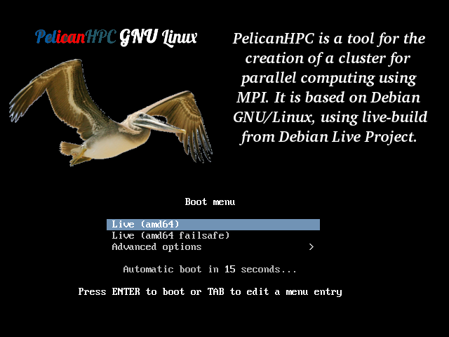
N.B: PelicanHPC work on legacy mode (If the machine use UEFI mode, search Google for how to switch to Legacy mode in Bios).
Here, if you press <Tab>, you have the opportunity to enter options to set keyboard mappings, or special "cheatcodes" to make the CD boot on problematic hardware. For example, default locale and keyboard layout are en_US.UTF-8 and us, respectively, i can get a Spanish keyboard by pressing <Tab> and then using arrow keys on keyboard to move the cursor and change keyboard layout to “es” (Valid options for these can be found in base.lst.pdf). Either explore the options by highlighting the Help line and pressing <Enter>, or edit options by pressing <Tab>, or just press <Enter> to boot up using default settings.
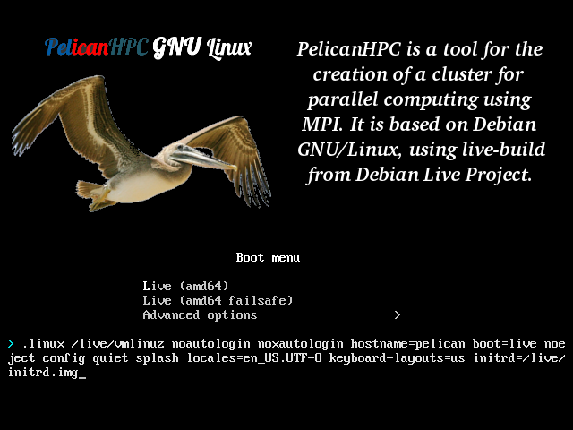
Once
you boot up, eventually you see:
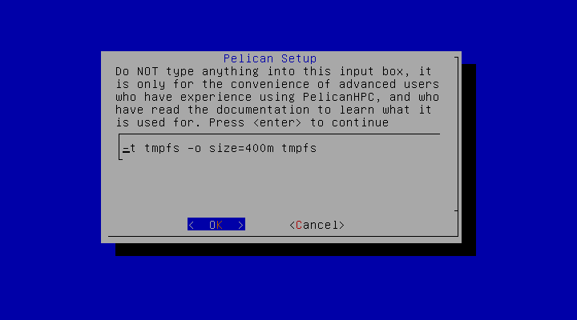
This screen gives you the opportunity to use a permanent storage device for the /home directory of the PelicanHPC user. By default, if you just press <Enter>, hard disks are not used, and PelicanHPC does not alter any of the computers used in the cluster. This is safe and easy, but it has the disadvantage that any work you do disappears when you shut down the cluster. To use permanent storage, you can type in the name of a device (hard disk partition, USB drive, etc.) that has a formatted ext2 or ext3 partition, which will be mounted at /home. For example, you could replace "ram1" with "sda2" or "hdb5" (no quotes). If you do this, a directory "user" will be created at the root of the specified device, and will be used as the home directory of the cluster user (username "user"). If you shut down the cluster, the directory will not be removed, and it can be re-used when you restart PelicanHPC. If you have any doubts about this, just press <Enter>. For casual experimentation, you do not need this feature. This feature is provided as a convenience for advanced users. It is impossible to test this feature on all possible hardware configurations, so NO GUARANTEES ARE MADE THAT IT WILL NOT DESTROY YOUR HARD DISK. Back up your data before trying anything but the default.
IMPORTANT NOTE: there is another way to use
permanent storage that is quite flexible. This is documented in the
file /home/user/pelican_config, which you can see if you boot using
the default. If this is your first experience with PelicanHPC, I
recommend doing a default boot, study pelican_config, and then choose
the option for permanent storage that you find most
appropriate.
Next, you will see
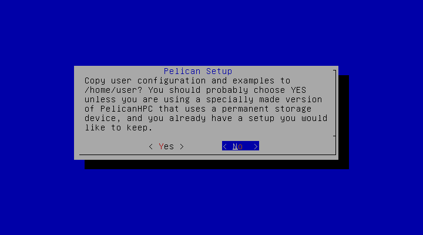
You will probably want to choose "yes",
unless you are re-using work you saved in a previous session.
Next,
you are prompted to change the default password:
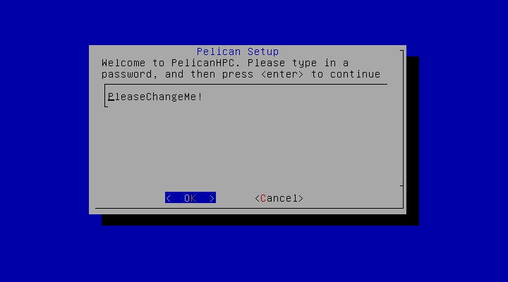
You should backspace to remove the default and then type in a new password. This will be the password for user "user" on the frontend node and on all of the compute nodes, too.
Finally, you are
all booted up and the login prompt appears:
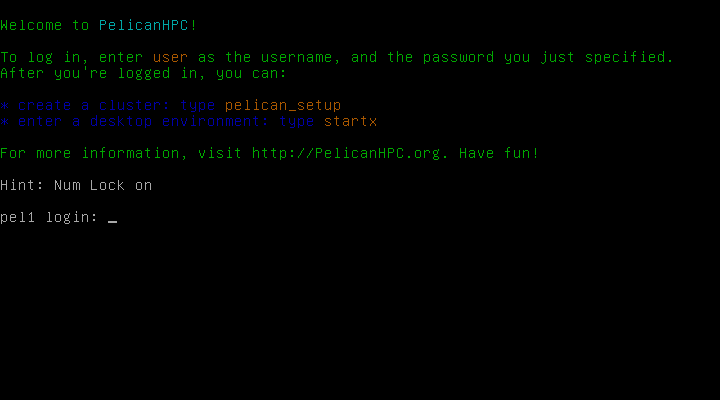
Enter the username "user" and then the password that you set a moment ago.
Now you are logged in:
Note that you can
enter the Xfce graphical enterface if you choose to by typing
"startx". By default, PelicanHPC uses the console, just to
avoid possible problems with unusual graphics hardware.
To set
up a cluster, type "pelican_setup". You can do this from
the console as in these instructions, or from Xfce by opening up a
terminal. Next, we see the following, supposing that you have more
than 1 network device:
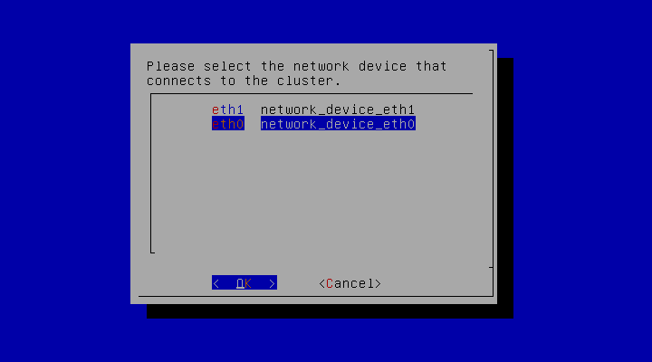
After
you choose the net device, services need to be started. Please read
the warning in the following screenshot. Setting up a PelicanHPC dhcp
server will get you in trouble with your network administrators if
you do this on an open network. You should make sure that the network
device used for the cluster is isolated from all networks except the
cluster. When you see the following screen, choose "yes".
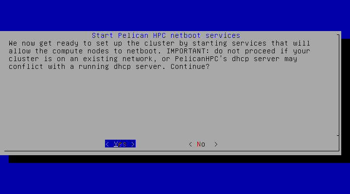
Next
you will see
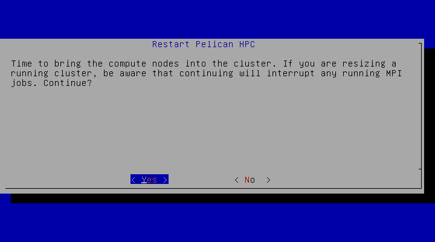
Press enter, and
go turn on the compute nodes.
When a compute node starts to
netboot, you'll see this whiz by:
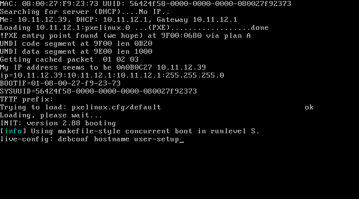
When
a compute node is done booting, you'll see this, supposing that it
has a monitor:
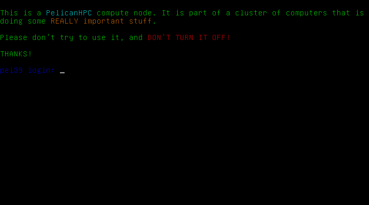
Back
on the frontend node, you see the following:
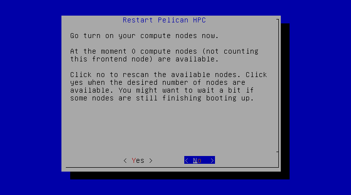
Once
a node has booted up, the count goes up:
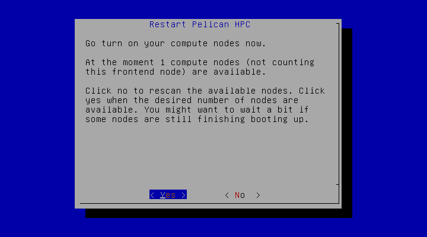
Keep
hitting "no" until all of your compute nodes have booted
up. Once you click yes, you'll see something like the following,
depending on how many nodes you have.
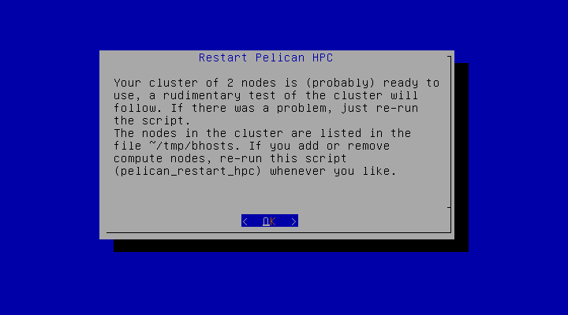
Finally, a
quick test of the cluster is run. You should see something like the
following:
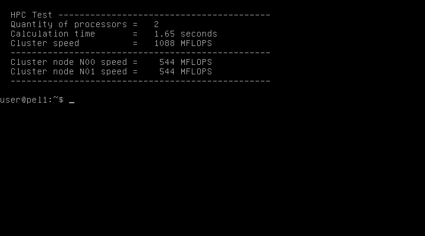
OK, that's it, the cluster is ready to use. Some other tips:
you can add software to the frontend node using "apt-get install whatever", supposing that the frontend has a second net card that you have configured to enable Internet access. This software is not available on the compute nodes. To add software so that it is available to all the nodes, it should be installed somewhere in /home/user.
the default MPI setup is in the file /home/user/tmp/bhosts. This assigns ranks to hosts in a round robin fashion. If your hosts have different speeds, numbers of cores, etc., you should modify this file. If the frontend node is virtual but the compute nodes are real, you should probably remove the frontend node from the calculations.
if you need other packages, then you can make your own version pretty easily using the make_pelican script that is available on the PelicanHPC homepage. This is explained (somewhat) below.
You can resize the cluster (add or remove compute nodes) whenever you like, by running "pelican_restarthpc".
IMPORTANT: In the /home/user directory is the file pelican_config. This file contains switches for advanced options that allow features such as use of permanent storage, booting without user intervention, changing the network of the cluster, wake-on-LAN, etc. Casual users do not need to explore this, but people who want a permanent cluster should look at it. It is self-documented.
By default, PelicanHPC images put /home/user
on a ramdisk which disappears when you shut down. You need to save
your work between sessions, if you want to re-use it. There are many
options, such as mounting a hard disk, using a USB device, etc. If
you have an Internet connection configured, you can email it to
yourself.
If you use PelicanHPC for serious work, it is very
convenient to mount a storage device to use as /home, so that your
work will be saved between sessions without taking any special steps.
When you boot up the frontend node, you have the option to select a
storage device to use. This is a feature for advanced users, and I
strongly advise that you dedicate a hard disk partition for use with
PelicanHPC. If you use a partition with other data on it, you should
make sure to back it up before using it with PelicanHPC! Only ext2,
ext3 and ext4 formats are known to work. This feature has been tested
using a very limited set of hardware, so use it with caution. There
is also the option to automatically mount a volume that has a special
name. See pelican_config in /home/user. This is the best solution for
users who want to use PelicanHPC on a long term basis.
Return
to contents
The distributed ISO images provide a bare bones cluster setup system, plus some packages that I use in my research and teaching. There are a few examples taken from my work, which may be of interest to those learning the basics of MPI, or to people interested in econometrics. However, many users will find that Pelican does not contain packages that they need. If one uses pelican_config properly, it is possible to give all nodes of the cluster internet access through the connection of the frontend node, so packages can be simply added using "apt-get". Nevertheless, some users will prefer to have a custom version of the CD image. PelicanHPC is made by running a single script "make_pelican" (with a version number appended), which is available on the download page, and also on the released images. If you have the prerequisites for running the script, it is very easy to make a customized version of Pelican. The prerequisites are installed on PelicanHPC, so you can build a custom version using the released version. The prerequisites are:
an installed version of GNU/Linux. This can be a minimal installation in a chroot jail or a virtual machine running under Linux, Windows or MacOS. If you use a virtual machine, make sure to allocate several GB of disk space.
the live-build package, version 3.x. Use the version available in Debian Stable “sudo apt-get install live-build”. You also need the debootstrap, wget and rsync packages.
To use the script:
examine the make_pelican script, which contains some self-explanatory comments. Add the packages you need to the package list section.
there is a part following the ##### pelicanhome #### comment where pelicanhome-v3.1.tar.bz2 is downloaded. You can easily modify this part to install your own custom content. See Customization for examples of how to install non-Debian software.
you need to run make_pelican as the root user (e.g. "sudo sh make-pelican"). A fast internet connection is helpful, since a lot of packages need to be downloaded. Also, it helps to build the image on a fast, hopefully multicore computer. Parts of the build process are parallelized and will take advantage of multiple cores. Build time for the default configuration on a decent dual core laptop with lot of RAM is less than half an hour.
when you are done, there will be a file "pelicanhpc-custom.iso" in the directory from where you ran the script.
There is a manual for Debian Live. Please have a look at it before trying to use make_pelican. Additional information is on the Debian Live homepage. This information is the main documentation, since make_pelican is just a script that provides a specific configuration to the Debian Live system of building a live CD image. Also remember that "man live-build", "man lb_config" and "man lb_build" will give you information.